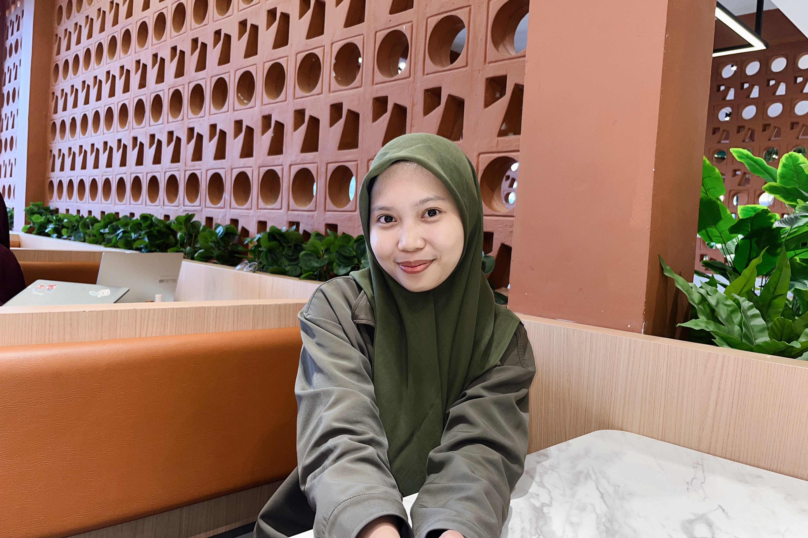
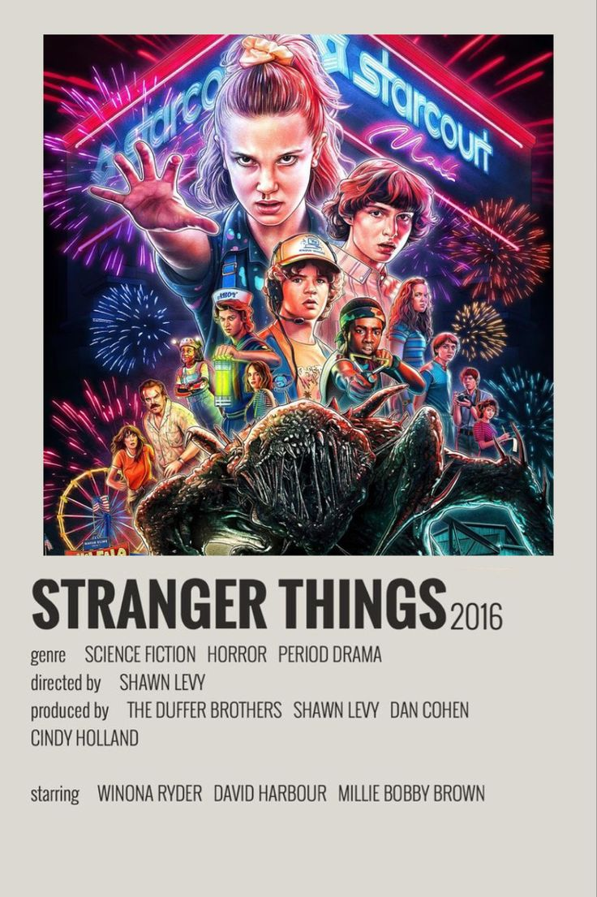
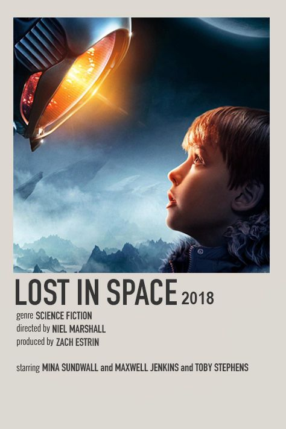
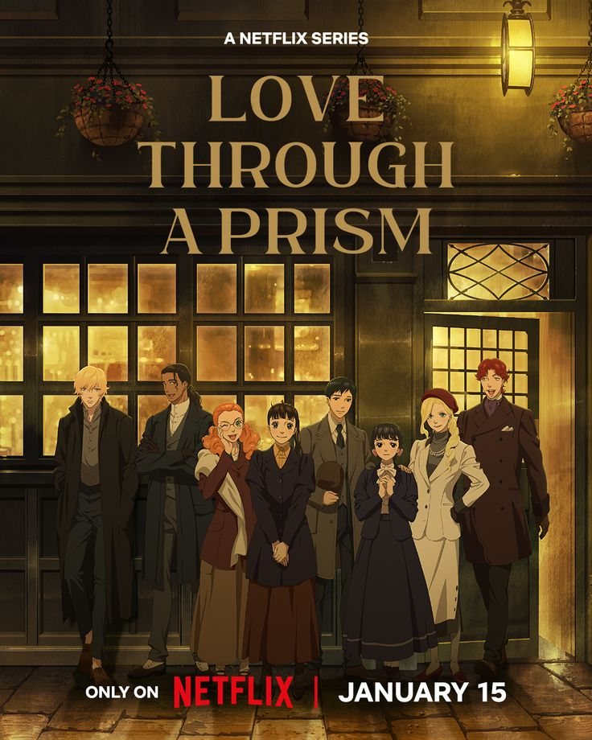
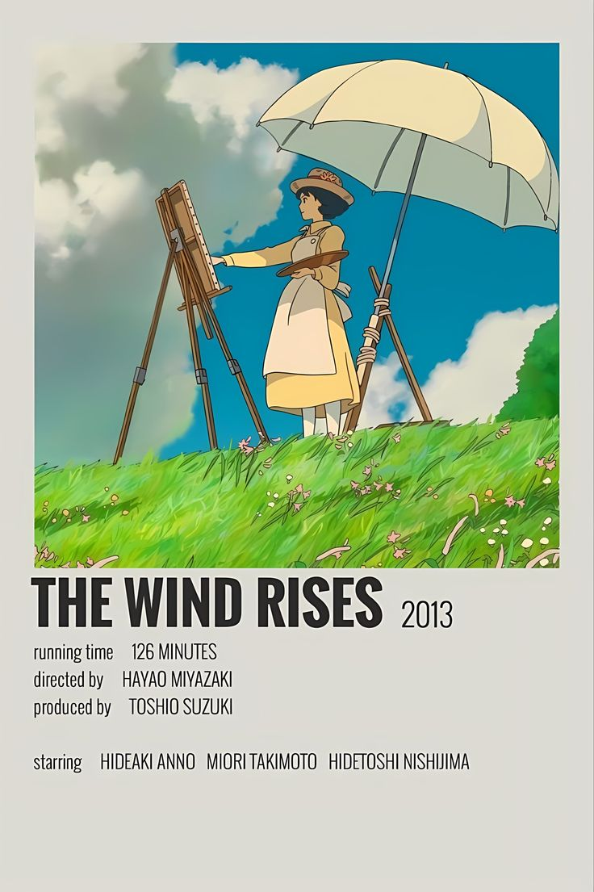
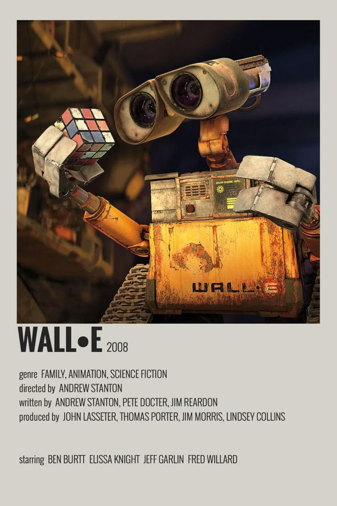
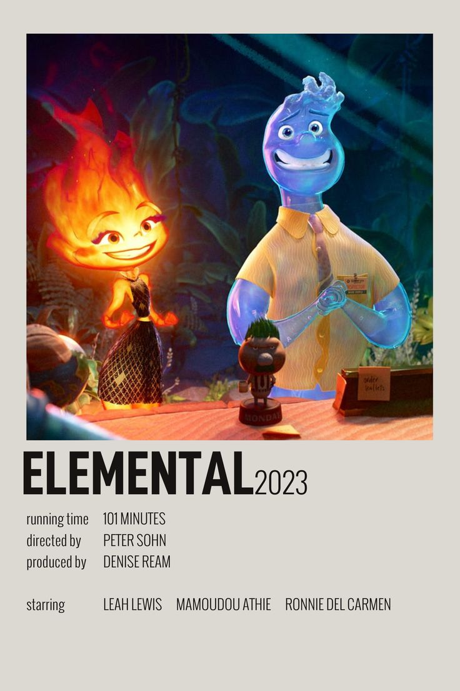
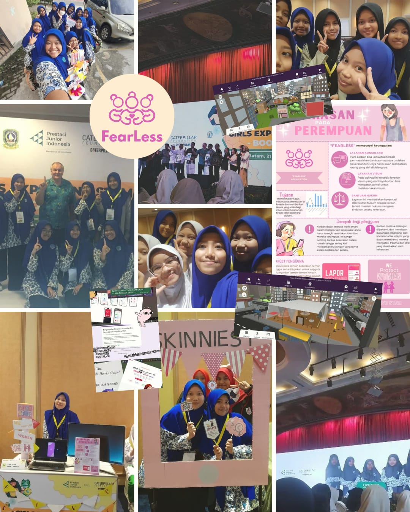
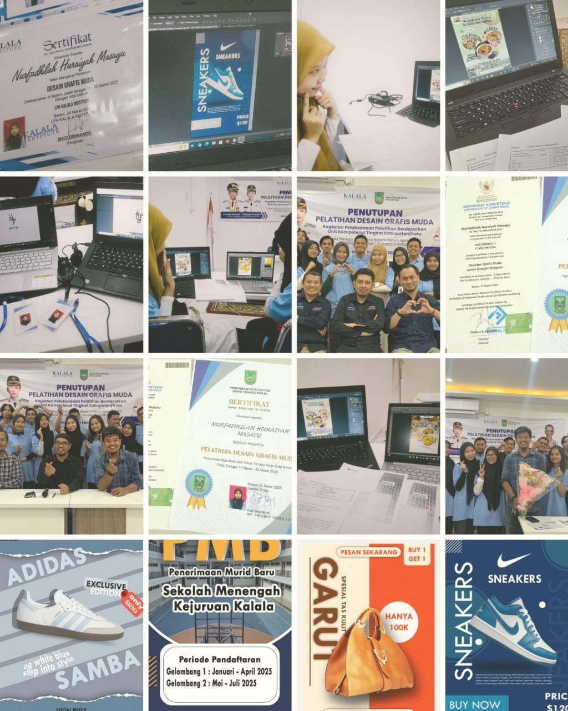
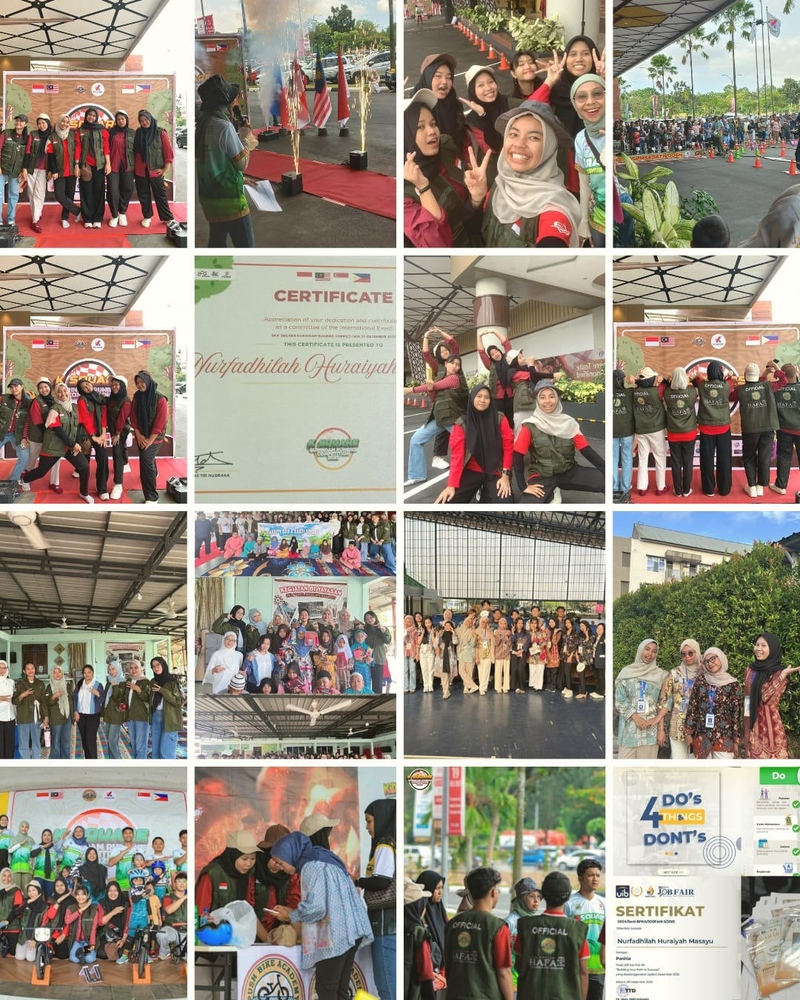

Nurfadhilah
Huraiyah Masayu
Information System
Let's see and Know Me✨
Kenalan Yuk🌸

🌙 Mood: aesthetic tapi suka ketawa receh.

That's me! ✨
Halo! Nama lengkapku Nurfadhilah Huraiyah Masayu. Biasanya dipanggil Dhila, aku adalah mahasiswi Sistem Informasi yang senang memadukan logika data dengan keindahan visual.
"Bisa coding dong berarti" hehehe honestly masih belajar step by step. Tentang hobi, hobiku banyak.. suka masak, mendengarkan musik, nonton film/movie, suka desain/edit kalau lagi gabut:), kadang juga meluangkan waktu untuk pergi jalan (yap traveling, biasanya ke pantai).
"Let's grow and shine together... 🎀" 🍓| Level | Institution | Period |
|---|---|---|
| Elementary | SD Putra Batam | 2013 - 2018 |
| Junior High | SMP Putra Batam | 2018 - 2021 |
| Senior High | MAN Batam | 2021 - 2024 |
| University | Information System - Universitas International Batam | 2025 - Now |

Stranger Things

Lost In Space

Love Through a Prism

The Wind Rises

Wall E

Elemental

🎓 Pengalaman Project STEM (CoSpace animation, Figma, Poster)

📌 Pelatihan Desain grafis (Adobe Photoshop, CorelDraw, Canva, Desain Brief)

🚀 Panitia (Desain, Administrasi, Edukasi)
Let's be friends! 💌